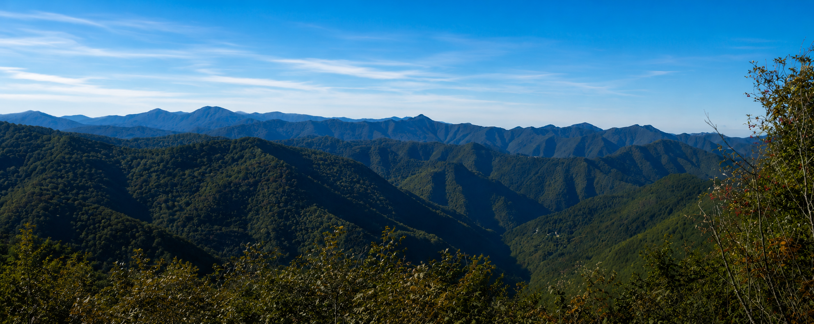

Salita escursionistica verso i crinali panoramici del Monte Buio
Percorso escursionistico con partenza da Casareggio e salita verso il Monte Buio, lungo sentieri che conducono progressivamente verso ambienti più aperti e panoramici.
L’itinerario richiede un minimo di allenamento e calzature adeguate, ma offre ampie vedute sulla Valbrevenna e sull’Appennino ligure.
Mappa interattiva in preparazione.
Percorso lineare: il tempo di rientro va considerato a parte. Verificare meteo e condizioni del sentiero prima della partenza. In caso di nebbia, vento o terreno bagnato prestare particolare attenzione.
Percorso non presidiato. Utilizzare calzature adeguate e rispettare ambiente, coltivi e proprietà private.